| About | Furniture | Carvings | Crafts | Directions |
Cushman Rustic Furniture
Phone: (989) 865 - 6378 | Address: 515 S Graham Rd, Saginaw, MI 48609
Hours: Monday - Saturday 12:00 P.M. to 6:00 P.M. or by Appointment
Cushman Rustic Furniture is a local rustic outdoor furniture and crafts store located 10 miles west of Saginaw, Michigan on M-52 just south of M-46. "The Barn", as the store is affectionately referred to because of its appearance, hosts a variety of unique wooden, outdoor furniture including benches, swings, picnic tables, chairs, and tiki-bars. You will also find exclusive chainsaw carvings, birdhouses, lighthouses, windmills, and other outdoor crafts.
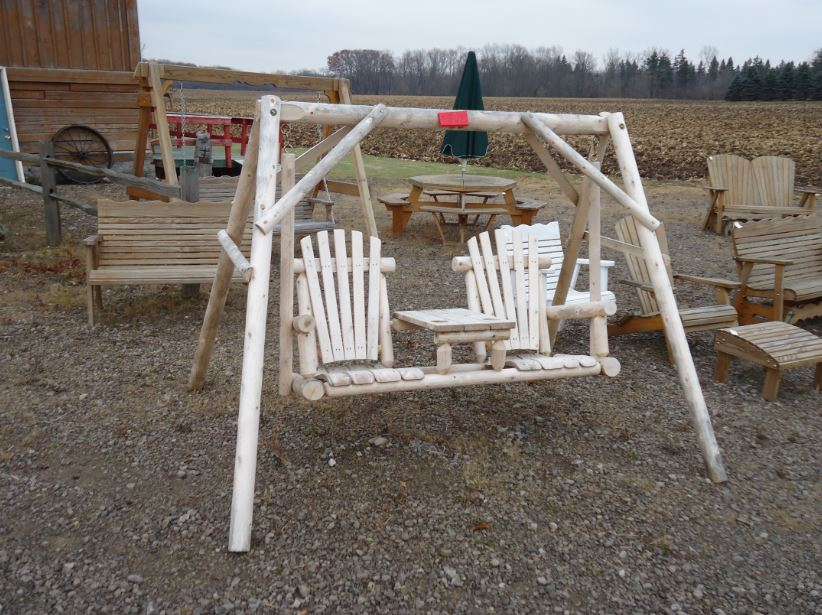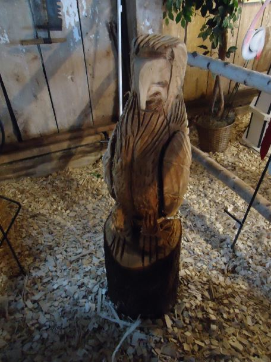Cushman Rustic Furniture was founded by owner Jerry Cushman in 2010. Jerry is a retired logger who enjoys the outdoors and woodworking. He originally used the barn to process his logging and firewood. Once he sold the logging and firewood businesses, he decided to revamp the interior of the barn with all of his saws and equipment. The barn's great location and a new-found interest in chainsaw carving inspired Jerry to start this store. The store features Jerry's custom chainsaw carvings along with other Michigan-made products that fit his style. Come stop by The Barn or give Jerry a call at (989) 865-6378. If you don't see something you are looking for, let Jerry know. He loves trying new designs and customer carving requests.
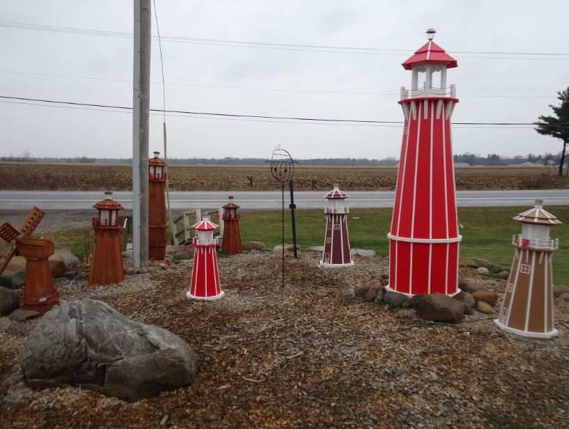 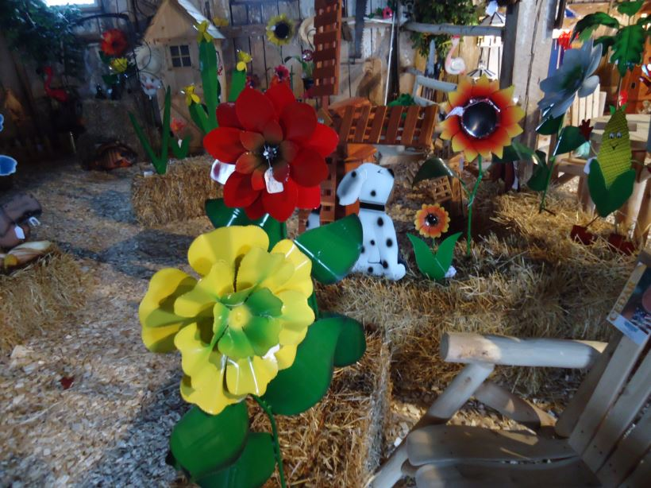Give Jerry a call and maybe he can help you out...
Phone: 989-865-6378
Windmills and Lighthouses:
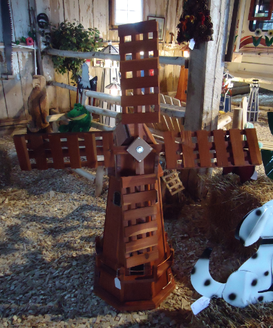 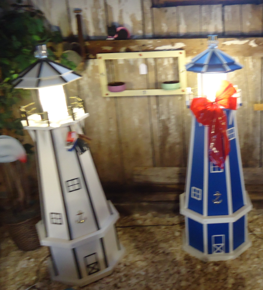 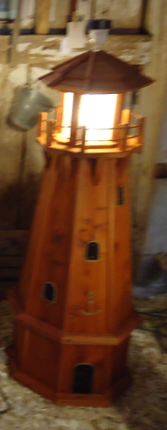
Birdhouses:
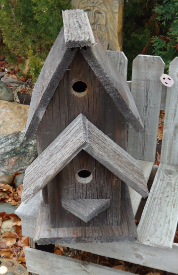 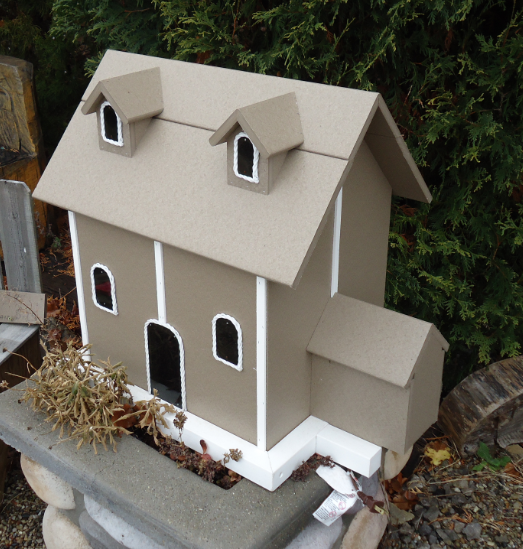
Metal Cut-outs:
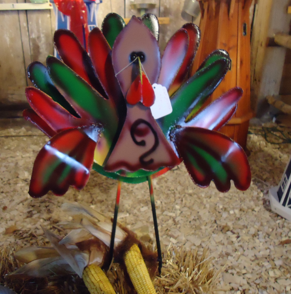 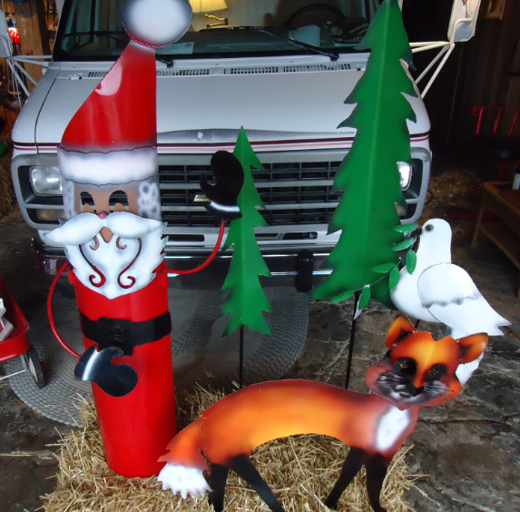 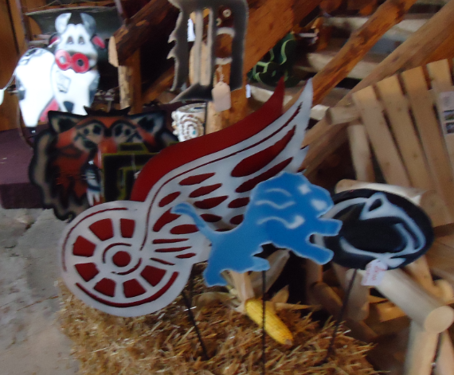
Exclusive Pieces:
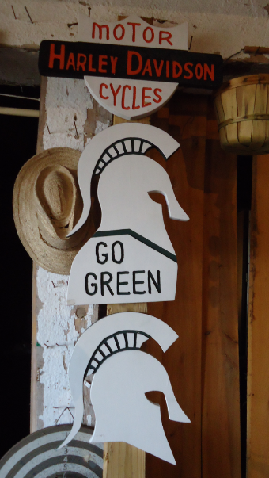 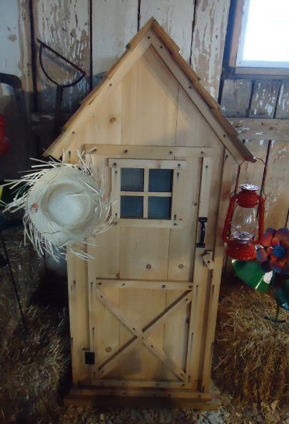 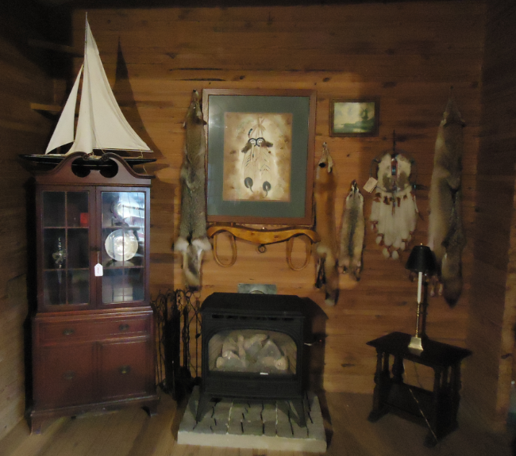 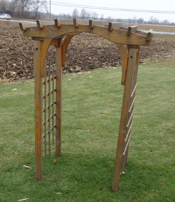